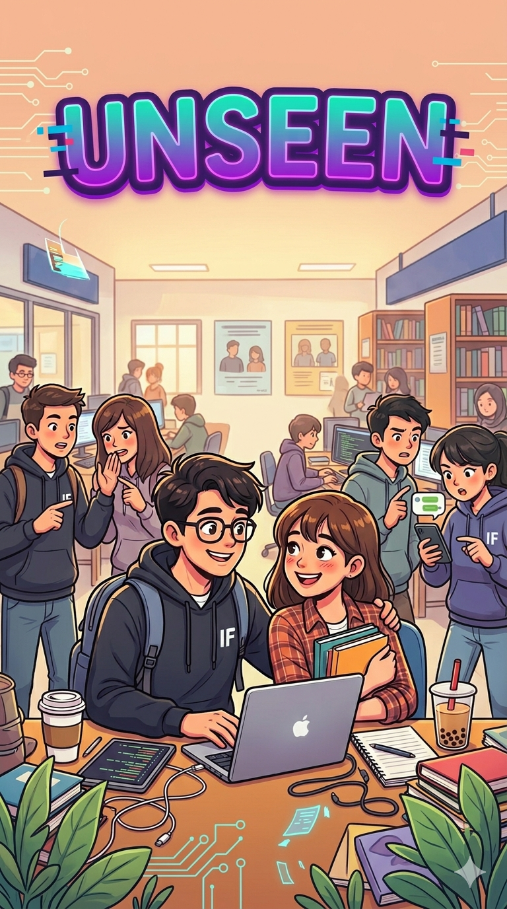

Romance • Campus Life • Slow Burn • Informatics
Status: Ongoing
A story about two Informatics students who keep crossing paths during campus events, coding projects, and late-night debugging sessions—without realizing how much they are slowly becoming part of each other’s lives.
Writing romance, chaos, and emotional damage.
12 Stories • 8.5K Followers